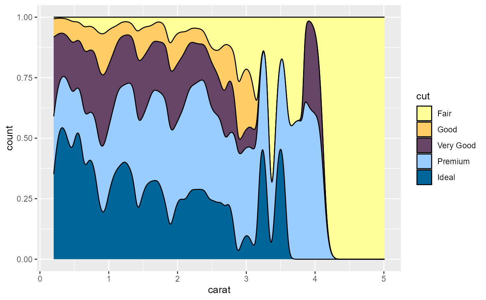
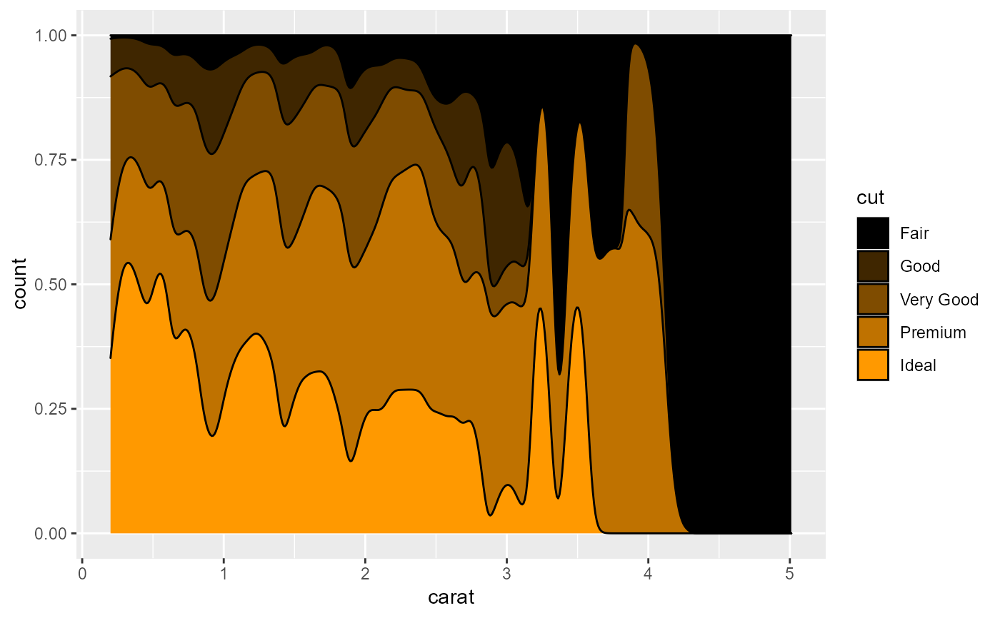
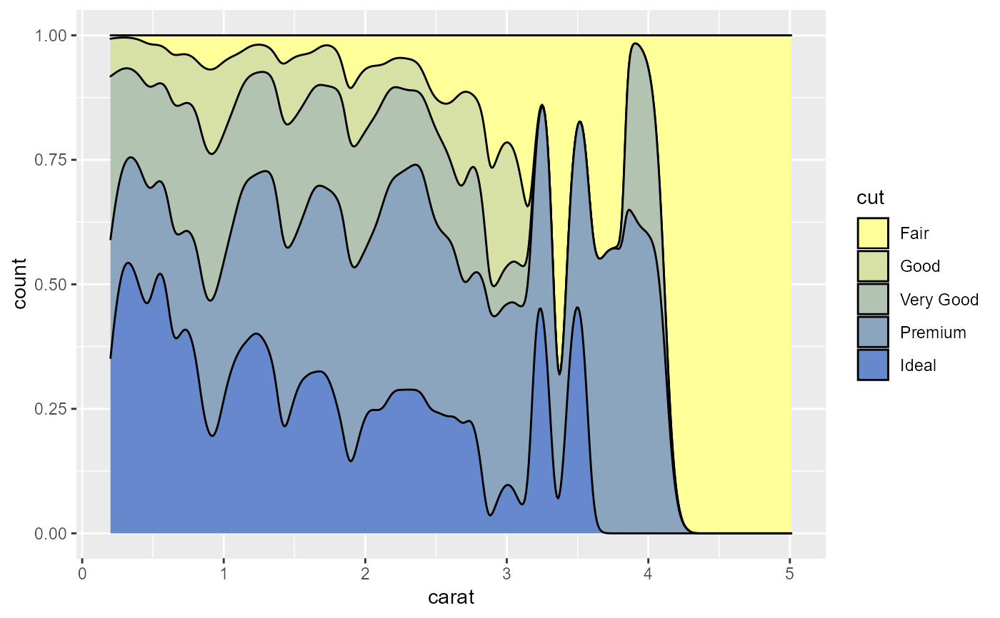

Scale functions used with ggplot2.
scale_color_lcars(palette = "2357", discrete = TRUE, reverse = FALSE, ...) scale_color_lcars1( color = "atomic-tangerine", discrete = TRUE, reverse = FALSE, dark = FALSE, ... ) scale_color_lcars2( low = "atomic-tangerine", high = "near-blue", discrete = TRUE, reverse = FALSE, dark = FALSE, divergent = FALSE, ... ) scale_fill_lcars(palette = "2357", discrete = TRUE, reverse = FALSE, ...) scale_fill_lcars1( color = "atomic-tangerine", discrete = TRUE, reverse = FALSE, dark = FALSE, ... ) scale_fill_lcars2( low = "atomic-tangerine", high = "near-blue", discrete = TRUE, reverse = FALSE, dark = FALSE, divergent = FALSE, ... )
| palette | character, name of palette in |
|---|---|
| discrete | logical, discrete or continuous palette. |
| reverse | logical, reverse color order. |
| ... | additional arguments passed to |
| color | character, LCARS color name for sequential palette. |
| dark | logical, use black instead of white for the base color in sequential palette or midpoint in divergent palette. |
| low | character, LCARS color name. |
| high | character, LCARS color name. |
| divergent | logical, use a divergent palette instead of two-color sequential palette. |
library(ggplot2) p <- ggplot(diamonds, aes(carat, stat(count), fill = cut)) + geom_density(position = "fill") p + scale_fill_lcars("2357")p + scale_fill_lcars1("atomic-tangerine", dark = TRUE)p + scale_fill_lcars2("pale-canary", "danub")